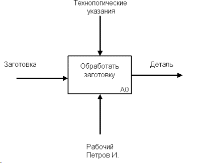
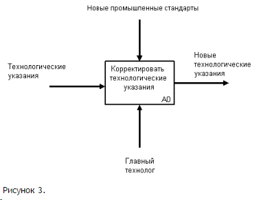

Вторым “китом” методологии IDEF0 является понятие интерфейсной дуги (Arrow). Также интерфейсные дуги часто называют потоками или стрелками. Интерфейсная дуга отображает элемент системы, который обрабатывается функциональным блоком или оказывает иное влияние на функцию, отображенную данным функциональным блоком.
Графическим отображением интерфейсной дуги является однонаправленная стрелка. Каждая интерфейсная дуга должна иметь свое уникальное наименование (Arrow Label). По требованию стандарта, наименование должно быть оборотом существительного.
С помощью интерфейсных дуг отображают различные объекты, в той или иной степени определяющие процессы, происходящие в системе. Такими объектами могут быть элементы реального мира (детали, вагоны, сотрудники и т.д.) или потоки данных и информации (документы, данные, инструкции и т.д.).
В зависимости от того, к какой из сторон подходит данная интерфейсная дуга, она носит название “входящей”, “исходящей” или “управляющей”. Кроме того, “источником” (началом) и “приемником” (концом) каждой функциональной дуги могут быть только функциональные блоки, при этом “источником” может быть только выходная сторона блока, а “приемником” любая из трех оставшихся.
Необходимо отметить, что любой функциональный блок по требованиям стандарта должен иметь по крайней мере одну управляющую интерфейсную дугу и одну исходящую. Это и понятно – каждый процесс должен происходить по каким-то правилам (отображаемым управляющей дугой) и должен выдавать некоторый результат (выходящая дуга), иначе его рассмотрение не имеет никакого смысла.
При построении IDEF0 – диаграмм важно правильно отделять входящие интерфейсные дуги от управляющих, что часто бывает непросто. К примеру, на рисунке 2 изображен функциональный блок “Обработать заготовку”.
В реальном процессе рабочему, производящему обработку, выдают заготовку и технологические указания по обработке (или правила техники безопасности при работе со станком). Ошибочно может показаться, что и заготовка и документ с технологическими указаниями являются входящими объектами, однако это не так. На самом деле в этом процессе заготовка обрабатывается по правилам отраженным в технологических указаниях, которые должны соответственно изображаться управляющей интерфейсной дугой.

Другое дело, когда технологические указания обрабатываются главным технологом и в них вносятся изменения (рис. 3). В этом случае они отображаются уже входящей интерфейсной дугой, а управляющим объектом являются, например, новые промышленные стандарты, исходя из которых производятся данные изменения.
